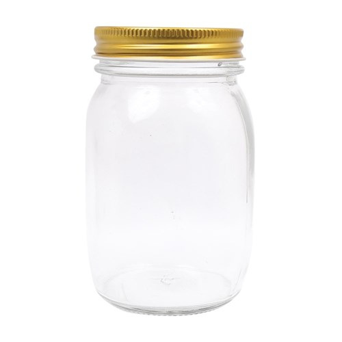
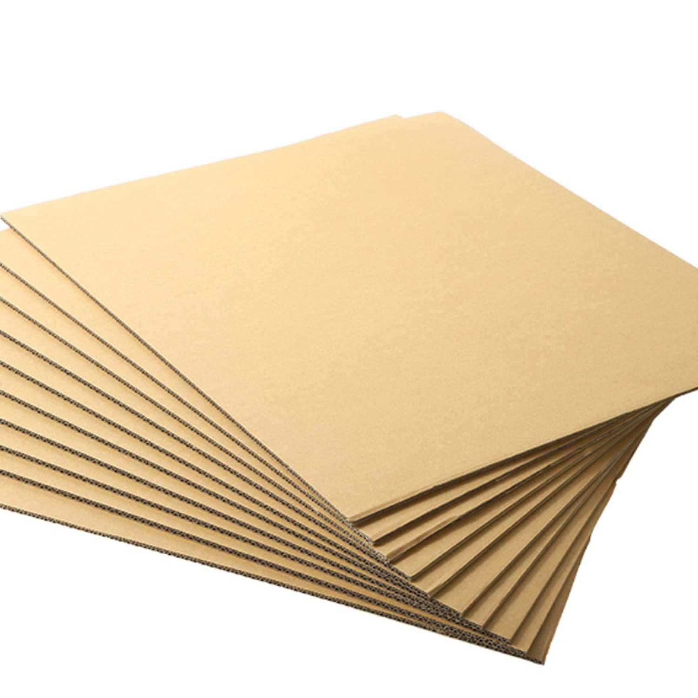
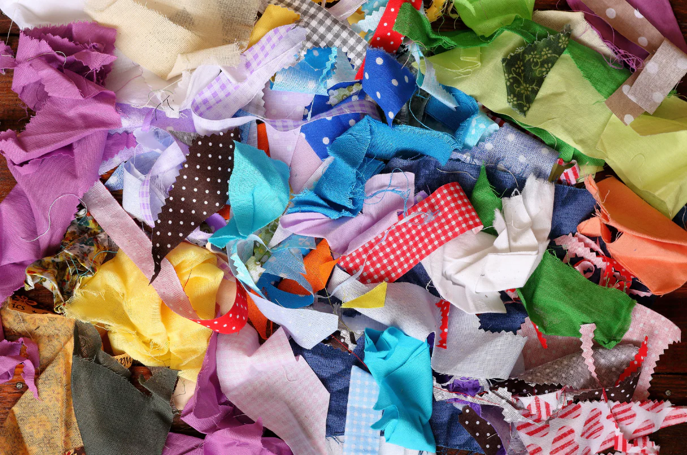
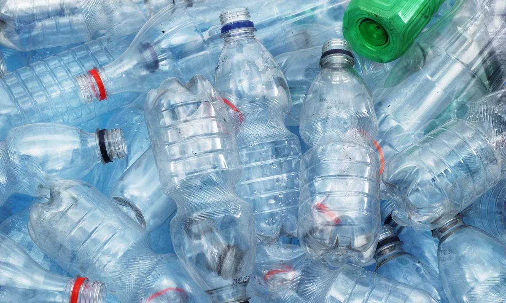
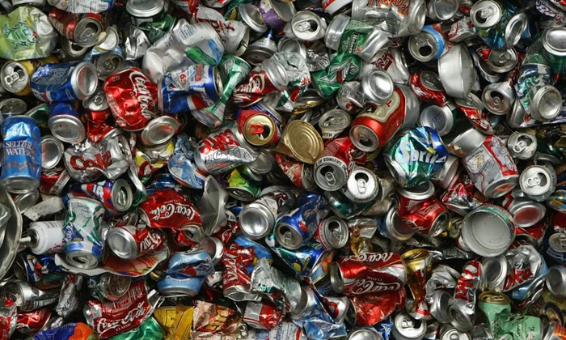

Common Recyclable Materials
Explore how everyday household materials can be given new purpose. Below are some of the most common items found in recycling bins that can be reused creatively instead of discarded.
-
Glass Jars: Clean, durable, and endlessly reusable. Glass jars are ideal for kitchen storage, craft supply organization, or even small indoor gardens. Paint or label them for a personalized touch.
Try this: Make a mason jar herb garden or a DIY lantern with wire handles. -
Cardboard: Cardboard boxes, tubes, and packaging are highly versatile. They can be used in craft projects, play structures for children, composting, or even insulation.
Try this: Build a small organizer, drawer dividers, or a laptop stand from sturdy cardboard. -
Fabric Scraps: Leftover fabric from old clothes or sewing projects can be transformed into reusable cloths, bags, or creative artwork.
Try this: Make a patchwork cushion cover or braided fabric keychains. -
Plastic Bottles: PET bottles can be cut, shaped, and molded into planters, bird feeders, or even lighting fixtures. Be sure to clean them thoroughly first.
Try this: Create a hanging vertical garden or use bottle bottoms as paint trays. -
Metal Cans: Strong and weather-resistant, metal cans are excellent for outdoor projects. They can become lanterns, tool holders, or musical instruments.
Try this: Turn cans into wind chimes or paint them for use as desk organizers.
------------------------------------------------------------------------------------------------------------------------------------------------------------------------------------------------------------------------------------------------------------------------------------------------------------------------------------------------------------------------------------------------------------------------------------------------------------------------------------------------------------------------------
------------------------------------------------------------------------------------------------------------------------------------------------------------------------------------------------------------------------------------------------------------------------------------------------------------------------------------------------------------------------------------------------------------------------------------------------------------------------------------------------------------------------------
------------------------------------------------------------------------------------------------------------------------------------------------------------------------------------------------------------------------------------------------------------------------------------------------------------------------------------------------------------------------------------------------------------------------------------------------------------------------------------------------------------------------------
------------------------------------------------------------------------------------------------------------------------------------------------------------------------------------------------------------------------------------------------------------------------------------------------------------------------------------------------------------------------------------------------------------------------------------------------------------------------------------------------------------------------------
------------------------------------------------------------------------------------------------------------------------------------------------------------------------------------------------------------------------------------------------------------------------------------------------------------------------------------------------------------------------------------------------------------------------------------------------------------------------------------------------------------------------------
------------------------------------------------------------------------------------------------------------------------------------------------------------------------------------------------------------------------------------------------------------------------------------------------------------------------------------------------------------------------------------------------------------------------------------------------------------------------------------------------------------------------------
Each of these materials represents not just waste, but potential. By understanding their properties and possibilities, you can take small steps toward reducing your environmental footprint while having fun being creative.